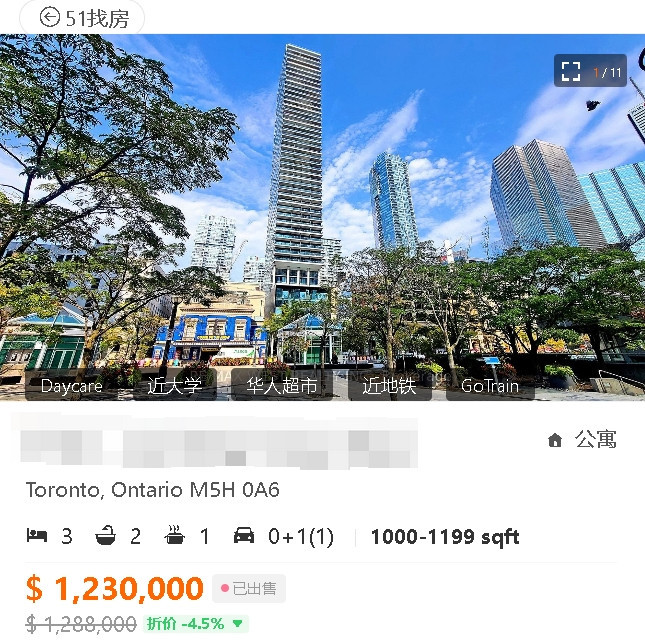
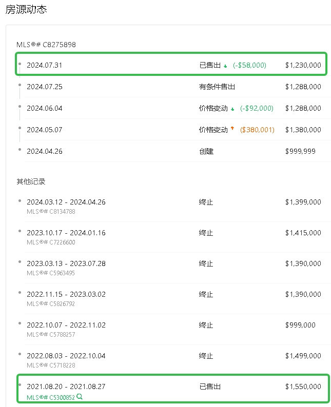

多伦多市中心娱乐区37层高的一间豪华公寓近日以亏损32万元出售，房地产经纪人表示，这反映了多伦多公寓市场几十年来从未如此艰难的状况。

这间三卧室公寓位于King Street、靠近多伦多国际电影节和Roy Thompson音乐厅，本周以123万元的价格成交。挂牌经纪人Rebecca Romeo说，在此之前，这套公寓曾多次尝试出售未果。
“我们现在确实处在一个买方市场，”Romeo在采访中说，同一栋楼里的许多其他代理经纪人面临着同样的困难，经纪人因为要达成交易受到巨大的压力。
Romeo透露，她的客户对交易价格感到满意，但这个价格比他在2021年支付的155万元少了约21%，但卖家称这让他最终可以将资金转移到其他地方。

”客户想要翻篇并继续前行。他对销售价格感到满意，“她说。
由Urbanation和CIBC发布的GTA公寓投资的挑战报告指出，大多伦多地区待售的公寓数量过多，导致许多业主无法售出他们的公寓，买家可以更加挑剔，但从长远来看这对负担能力可能是一个不好的影响。
CIBC的Benjamin Tal和Urbanation的Shaun Hildebrand在报告中写道：”低层住宅市场的情况似乎合理，但公寓市场“显然处于衰退状态，情况恶化到了几十年来未见的水平。”
价格太高，买家不愿意进场，因为利率较高，但卖家又不愿意降价，因为开发成本高，他们选择提供激励措施来竞争，这导致新公寓的销售量达到了自1990年代末以来的最低水平。
”从需求方（投资者）和供给方（开发商）的经济学角度来看，这种情况都没有经济意义，使得市场陷入僵局，“他们写道。
Fox Marin and Associates的Ralph Fox警告说，任何单一的财产都可以作为这种现象的例子。”房产在市场上的滞留时间更长。公寓方面的库存月数开始增加，“但他表示，许多公寓楼花业主是投资者，但并不都处于必须出售的境地。
”他们在坚持，“他说，这也是他对考虑在当前市场出售的人的建议。”如果你在多伦多拥有一笔来之不易的资产，坚持住，坚持住，坚持住。利率会下降的，“他说。
公寓供过于求的一个因素是新公寓的开发商针对的是投资者，而不是最终用户。
”我们在不合适的时间得到了很多产品……一些人不幸在接下来的几个月里会遭受损失，“Devron Developments的Pouyan Safapour说。
但他表示，市场的疲软也对新公寓项目的启动能力产生了连锁反应，这意味着新建筑的数量正在下降。这意味着在未来几年里，进入市场的单位数量将无法跟上人口增长的速度。
”这对负担能力来说将会非常糟糕。各种类型的公寓价格将会急剧上升，“他说。
在低层住宅市场，供应量较低，因此买家仍在竞争。
多伦多房地产经纪人Teuta Guci指出，她以172.8万元挂牌的一栋Leslieville独立屋，有三名买家竞标，最终销售价格为212万元。
”买家们仍在观望并谨慎等待利率下调。然而，他们应该现在就行动，因为当他们等待时，价格会继续上涨，“她说。